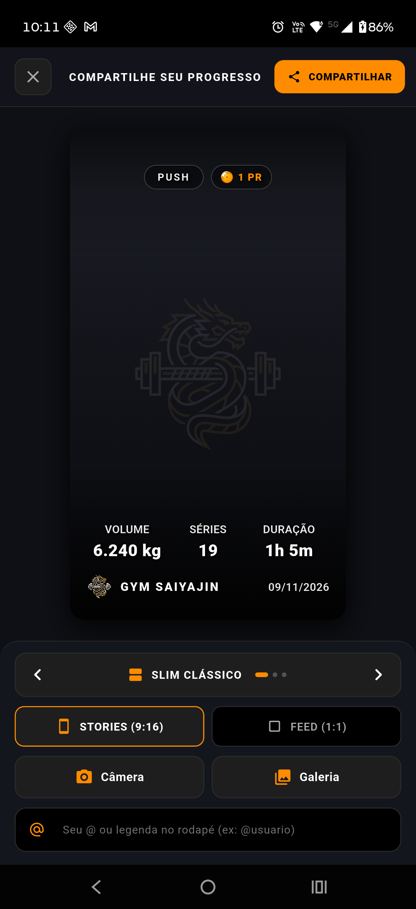
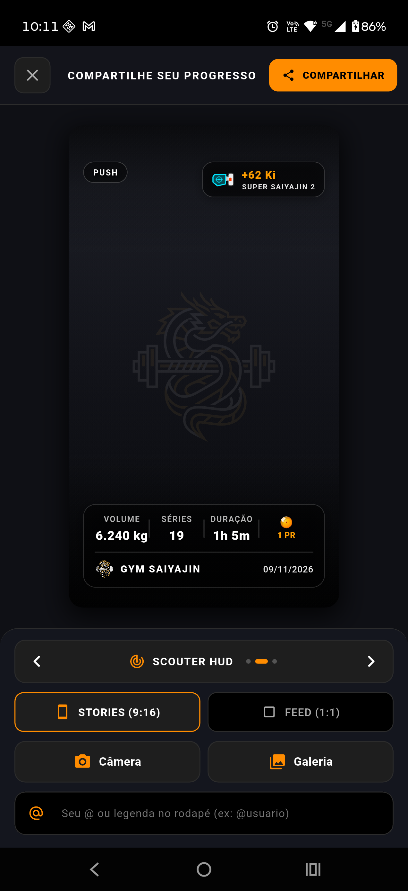
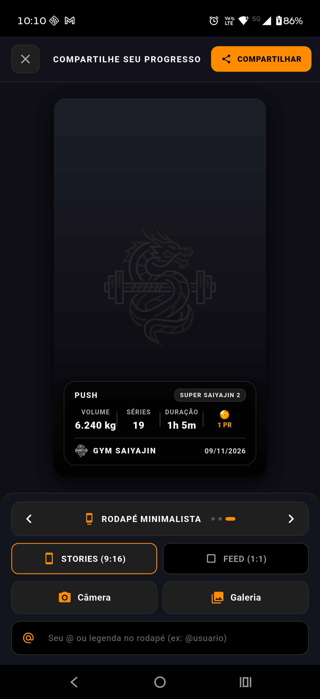
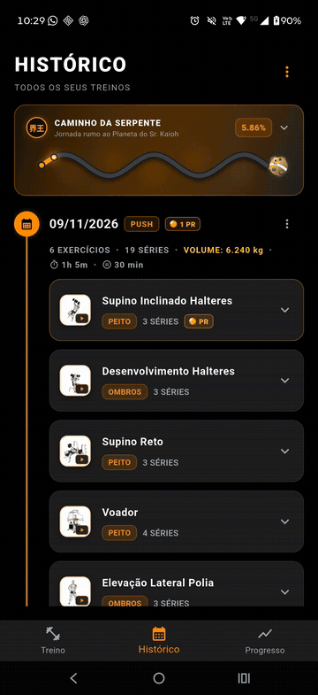

Compartilhamento Social Personalizável (Stories & Feed)
O módulo de compartilhamento do Gym Saiyajin foi projetado com base no padrão estético e funcional dos melhores aplicativos esportivos do mercado (com destaque para referências de corrida como Adidas Running e fotos clássicas de espelho de academia).
O objetivo é proporcionar ao atleta um cartão comemorativo de alto impacto, que valorize o registro visual da sua evolução física sem poluir a imagem ou cobrir o seu corpo com blocos opacos pesados.
📐 1. Proporções Disponíveis
O modal permite alternar instantaneamente entre dois formatos de exportação:
| Proporção | Formato | Destino Recomendado | Comportamento Visual |
|---|---|---|---|
STORIES (9:16) |
Tela cheia vertical | Instagram Stories, WhatsApp Status, TikTok | Altura estendida, tipografia imponente e paddings verticais generosos para evitar cortes pelas barras nativas do Instagram. |
FEED (1:1) |
Quadrado perfeito | Feed do Instagram, WhatsApp Chat, Twitter/X | Layout compacto simétrico com fontes e espaçamentos auto-ajustáveis via FittedBox e Flexible. |
🎭 2. Presets de Overlay
O atleta dispõe de 3 estilos de composição gráfica que podem ser alternados com um único toque:



graph TD
A[Sessão Finalizada] --> B[CompartilharCardModal]
B --> C{Escolha do Preset}
C -->|Preset 1| D[Slim Clássico]
C -->|Preset 2| E[Scouter HUD]
C -->|Preset 3| F[Rodapé Minimalista]1. Slim Clássico (Padrão)
- Inspiração: Estilo esportivo limpo em espelho de musculação.
- Estrutura:
- Topo Sutil com Troféu: Pílula sutil da divisão do treino (ex:
TREINO A - PEITO E TRÍCEPS) e, quando houver recordes batidos na sessão, um chip comemorativo elegante com a Esfera do Dragão (DragonBallIconcom estrelas refletindo dinamicamente a quantidade de PRs batidos, de 1 a 7 estrelas) e o total em dourado Saiyajin (ex:2 PRs), organizados com quebra fluida (Wrap) e proteção contra overflow para nomes longos. - Centro e Terço Superior 100% Livres: Preserva integralmente o rosto, cabeça, fones de ouvido e o físico do atleta em fotos clássicas de espelho.
- Base Esportiva: Três métricas principais com amplo respiro horizontal e sem linhas divisórias —
VOLUME,SÉRIESeDURAÇÃO— em caixa alta. O rodapé com logo de Shenlong, marca e data/@handle completa a composição com máxima clareza.
2. Scouter HUD
- Inspiração: Telemetria avançada de alto desempenho com estética stealth (estilo heads-up display aeronáutico/cyberpunk).
- Estrutura:
- Carimbo Scouter no Topo Direito: Vidro fumê fosco translúcido com borda neutra e sombra de profundidade (
0.8pxcomColors.white18), lente vetorial holográfica (ScouterIcon) reativa à transformação, leitura digital de Ki obtido na sessão (+X Ki) e Patamar Saiyajin. - Badge de Treino no Topo Esquerdo: Pílula translúcida com borda fosca contendo a divisão do treino.
- Dock de Telemetria Unificada na Base: Painel translúcido de vidro tecnológico de Scouter reunindo as métricas na ordem hierárquica oficial (
VOLUME,SÉRIES,DURAÇÃOeDragonBallIconcom PRs), linha de corte fina e a assinatura oficial com a marca e o@handleem uma única moldura coesa com acabamento neutro, evitando bordas coloridas invasivas para que o físico do atleta seja o protagonista absoluto.
3. Rodapé Minimalista
- Inspiração: Estilo esportivo moderno com terço inferior translúcido (frosted glass dock ancorado).
- Estrutura:
- Topo e Meio 100% Desimpedidos: O enquadramento superior e central da foto fica totalmente limpo.
- Painel Inferior Translúcido Ancorado (Frosted Glass):
- Ancorado suavemente na base com gradiente de apoio e margens seguras para Instagram Stories.
- Cabeçalho interno com a divisão do treino em branco puro com sombra e badge de patamar em chip fosco minimalista.
- Linha de métricas esportivas padronizadas (
VOLUME,SÉRIES,DURAÇÃOeRecordescomDragonBallIcon) separadas por divisores verticais discretos. - Divisor translúcido fino com logotipo oficial e
@handle.
🎨 3. Controles & Customização

No painel inferior do estúdio em tela cheia (com SafeArea e pré-visualização adaptativa via FittedBox), o guerreiro tem acesso direto a:
- Navegação Entre Presets (Setas & Gesto de Swipe):
- Seletor ergonômico de 48dp com setas esquerda/direita (
<e>), indicador animado de dots de posição (1 de 3) e transição suave. - Suporte completo a gesto de deslize (swipe horizontal) diretamente sobre a pré-visualização do card ou sobre a barra de controles com feedback háptico.
- Seletor de Formato:
- Botões ergonômicos ampliados (44dp de altura) para alternar entre Stories (9:16) e Feed (1:1).
- Ações de Foto Ergonômicas:
- Botão Câmera: Aciona a câmera nativa do aparelho via
image_picker(altura 46dp, ícone destacado). - Botão Galeria: Permite selecionar uma foto existente do rolo da câmera (altura 46dp).
- Botão Remover: Botão de exclusão dedicado de 46x46dp com realce perigo suave, retornando ao fundo texturizado nativo de Shenlong.
- Exibição Inteligente de PRs da Sessão Específica:
- O card calcula e exibe estritamente os Recordes Pessoais (PRs) conquistados naquela sessão específica, e não o total vitalício do app.
- O
ProgressoControllerreconstitui cronologicamente o histórico até o momento do treino compartilhado para determinar se houve quebra de recorde prévio. - Quando há PRs, exibe a esfera de 4 estrelas (
DragonBallIcon) e a formatação precisa no singular ou plural (1 PR,2 PRs,3 PRs...). No preset Slim Clássico, o badge de PR é destacado como troféu no topo junto à divisão do treino; nos presets Scouter HUD e Rodapé Minimalista, a métrica integra o dock inferior de telemetria. Caso o treino não tenha tido recordes batidos, o elemento de PR é omitido, mantendo o card limpo e harmonioso. - Patamar de Transformação Saiyajin Atual:
- A categoria estampada no topo direito (Scouter HUD) ou no rodapé exibe o Patamar atual de evolução do atleta (ex: Guerreiro Z, Super Saiyajin...), carregado de forma unificada tanto pelo término do treino (
TreinoScreen) quanto pela navegação no histórico (HistoricoScreen). - A telemetria exibe o ganho instantâneo daquela sessão (
+X Ki) com a lente do Scouter (corLenteScouter) reativa à transformação. - Tipografia de Alto Contraste Nativa:
- Texto em branco puro (
Colors.white) protegido por camadas quádruplas de drop shadow preto (Shadow), garantindo contraste absoluto contra qualquer fundo fotográfico (iluminação clara ou escura de academia) sem poluição visual. - Campo de
@handle/ Legenda: - Input dedicado de 46dp com ícone
@, botão para limpar texto e teclaDone. O texto digitado é estampado em tempo real no rodapé do cartão (ex:@luan.diniz). - Se deixado em branco, o cartão exibe a data formatada como assinatura padrão.
- Fallback Texturizado Sem Foto:
- Caso o atleta prefira não anexar uma foto de si mesmo, o card renderiza um gradiente escuro texturizado com a silhueta sutil de Shenlong ao fundo, permitindo compartilhar os resultados do treino imediatamente.
⚙️ 4. Pipeline Técnico de Geração e Exportação
sequenceDiagram
participant UI as CompartilharCardModal
participant RB as RepaintBoundary (GlobalKey)
participant Service as CardShareService
participant Storage as path_provider (Cache)
participant Native as share_plus
UI->>Service: compartilharWidgetComoImagem(boundaryKey)
Service->>RB: findRenderObject() as RenderRepaintBoundary
Service->>RB: toImage(pixelRatio: 3.0)
RB-->>Service: ui.Image (High-DPI)
Service->>Service: toByteData(format: ui.ImageByteFormat.png)
Service->>Storage: writeAsBytes(pngBytes)
Service->>Native: Share.shareXFiles([XFile(path)])
Native-->>UI: Dialog Nativo do SO (Instagram, WhatsApp, etc.)- Captura em Alta Resolução (3x DPI):
- A renderização no visor é feita com largura de 300px para pré-visualização ergonômica.
- Na hora da exportação, o
CardShareServiceinvocatoImage(pixelRatio: 3.0), gerando uma imagem de 900×1600 px (Stories) ou 900×900 px (Feed), garantindo nitidez absoluta nas redes sociais sem pixelização. - Sombras de Texto Multinível:
- Todos os textos e badges sobrepostos à foto recebem uma camada quádrupla de
shadows(Offset(0, 1),Offset(1, 1),Offset(0, 2), etc.) comColors.black, assegurando legibilidade cristalina independentemente de a foto ter pontos de luz estourados ou sombras escuras. - Gerenciamento de Memória:
- A geração é assíncrona com indicação de progresso (spinner) no botão de ação, prevenindo cliques concorrentes e vazamentos de memória.